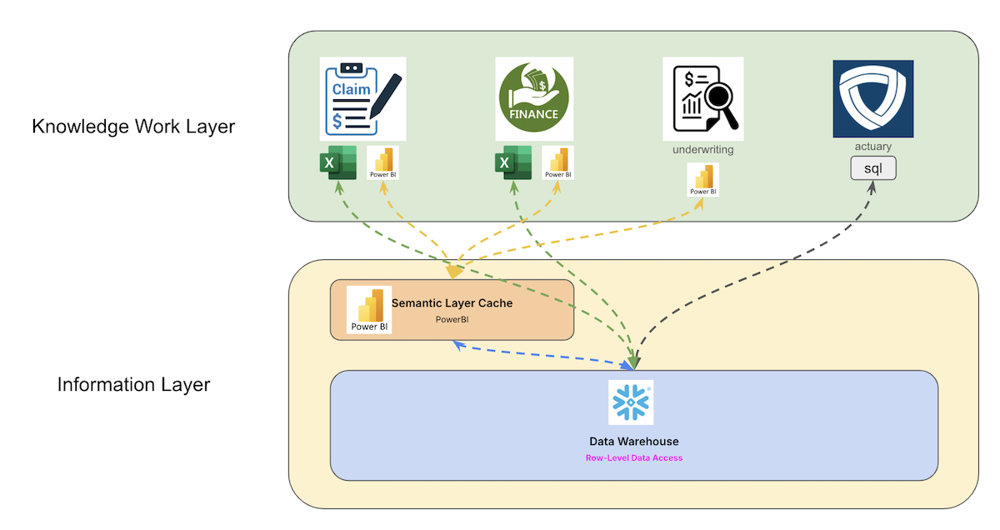

Knowledge Work Architecture
Knowledge work architecture is the discipline of structuring a data platform so that it converts raw information—orders, claims, payments—into revenue-generating insight with maximum efficiency. It recognizes that companies don’t buy technology for its own sake; they buy productivity, achieved by either speeding up individual workflows or enabling teams to coordinate more smoothly.
Every architectural choice is evaluated by a single test: does it improve the rate at which the platform transforms data into business value? This technology-agnostic lens keeps leadership focused on measurable gains in line-of-business productivity rather than on vendor promises.
Logical Layers of Knowledge Work Architecture
At Patterson Consulting we model an organization's knowledge work architecture as 3 logical layers:
Knowledge Work Layer
- Business processes using information
- People using expertise with information
- Convert information into revenue
Information Layer
- Data model definitions
- Semantic layer
- APIS: SQL, REST, GraphQL
Infrastructure Layer
- Cloud infrastructure
- Databases, ETL pipelines, Servers
- Data Governance, Security
Obviously this is different than many other shop's platform architectures; We went to this logical model (based on our industry experience) because honestly most of the industry had run the idea into the ground with 100's of boxes tacked onto a diagram (e.g., all the "modern data platform architecture" diagrams).
We've re-focused our architecture approach around how organizations transform information (knowledge work) in the pursuit of meeting specific goals (e.g., "capture revenue"). This focus is because knowledge work is information processing in non-labor-output roles. As information flows into the company's business units, it is processed and enriched through knowledge work until it acts on its intended goal (e.g., "capturing revenue").

From that perspective, any data platform investment or change should consider:
- “How does this affect line of business efficiency?”
- “How well does our platform convert raw input data into information that produces revenue?”
In the early days of most companies, how you frame your platform architecture doesn't get a lot of attention. However, as companies grow they hit different tiers of architectural needs in what they need from their platform. This is where the knowledge work architecture framework helps.
Adopting a logical, technology-agnostic framework for data platform architecture, structured into three distinct layers—knowledge work, information, and infrastructure—enables businesses to separate strategic operations from underlying technical details. This abstraction significantly improves operational efficiency, allowing teams to concentrate on high-value tasks and informed decision-making without being encumbered by platform-specific limitations. By emphasizing information transformation aligned directly with revenue generation, organizations achieve lasting productivity gains and strategic flexibility, independent of specific technological choices or vendor constraints.
With the basic idea out of the way, let's jump into defining our starting point: the knowledge work layer.
The Knowledge Work Layer
The Knowledge Work Layer is the highest logical tier in Patterson Consulting’s Knowledge Work Architecture, designed to maximize operational efficiency by abstracting users from underlying data complexities. At this layer, users access validated, aggregated information through standardized APIs such as SQL, ODBC, and REST, enabling them to focus on converting information into actionable outcomes without managing technical details.
This separation between knowledge work and infrastructure ensures that technological changes directly enhance business outcomes, improving workflow efficiency and coordination across teams. Centralized, structured information reduces operational friction, enabling faster decision-making and avoiding the pitfalls of technical overhead that can hinder competitiveness.
Business intelligence platforms like Tableau, Power BI, and Looker support activities at this layer, allowing users to visualize, analyze, and report information efficiently. The focus remains on using clean, curated data to drive results, while data science workflows are handled separately to preserve operational speed and clarity.
The Information Layer
The Information Layer serves as the critical bridge between raw data management and business decision-making (in the knowledge work layer), presenting a single, trusted view of enterprise information through familiar interfaces such as SQL, APIs, and BI tools. By abstracting the complexity of ingestion, cleansing, and storage, it eliminates reliance on ad-hoc spreadsheets and fragile point integrations, enabling faster, more accurate insights.
This architecture ensures that knowledge workers (in the knowledge work layer) can engage directly with curated, governed datasets without needing to navigate underlying infrastructure, accelerating both individual productivity and team collaboration.
Functioning as the foundation for data consistency and strategic alignment, the Information Layer aggregates and standardizes data from diverse sources into a unified model. This approach strengthens cross-functional coordination, compresses time-to-insight for new initiatives, and drives operational leverage without proportional increases in headcount. By maintaining a consistent logical source of truth, it enhances business agility, improves analytical accuracy, and supports seamless scaling as information needs grow.
Once the information needs for a business are defined, the platform engineering team can take these requirements and implement a logical data platform in the infrastructure layer.
The Infrastructure Layer
The infrastructure layer is responsible for ingesting, integrating, and maintaining a continuously updated golden copy of enterprise information to support efficient knowledge work.
Its core functions include:
- delivering scalable, cost-effective storage
- enabling high-performance ANSI SQL-native processing
- feeding the logical information layer with refreshed, accurate data on a daily basis
In the diagram below you can see the 3 layers of the knowledge work architecture framework map to the physical implementation of a data platform supporting the information obligations of the organization.

To ensure a clean separation of concerns, the infrastructure layer interacts with end-user tools exclusively through the information layer, without direct access. The information layer exposes already-cleaned, aggregated data through standard APIs (SQL, REST). This allows business users to act in business intelligence tools, spreadhseets, and automated report generators without worrying about the physical sources of the data. This design supports legacy workflows, enables logical platform evolution, ensures seamless internal and external data integration, and establishes a foundation for advanced analytics and AI readiness.
Why Not Use Traditional Data Warehouse Terminology?
Traditional data warehouse and lakehouse terminologies emphasize technology-specific workloads, typically optimized for structured analytics and machine learning applications. However, our architectural approach intentionally avoids these restrictive labels, focusing instead on "knowledge work" and the efficient flow of information within business workflows. There is a lot of overlap, however.
The Knowledge Work Architecture framework aligns closely with traditional data warehousing concepts by structuring data processes into clearly defined layers that prioritize business value. Specifically, the Knowledge Work Layer corresponds to the analytics and reporting capabilities traditionally found in business intelligence tools, enabling end-users to directly convert structured data into actionable insights and revenue-generating decisions. The Information Layer aligns seamlessly with the traditional semantic layer and data warehouse structure, emphasizing standardized, governed data models and consistent business logic.
Similarly, the Infrastructure Layer mirrors the foundational technical components of classic data warehouses, handling data ingestion, transformation, and storage mechanics. Additionally, both frameworks emphasize Data Governance and Security as critical cross-cutting elements essential for ensuring data integrity, compliance, and secure data access across all layers. Collectively, the overlap between these frameworks highlights a shared objective of effectively transforming raw data into valuable business outcomes.
Minimizing Information Friction
The shift this new knowledge work architectural framework reflects advancements driven by large language models (LLMs) and reasoning-capable technologies, which now allow organizations to leverage both structured data and unstructured text seamlessly. By centering architecture around knowledge work productivity rather than specific tools, we ensure greater flexibility, sustained relevance, and improved alignment between technological investments and strategic business outcomes.
This architecture is advantageous in the age of Large Language Models (LLMs) because it decouples business-driven knowledge workflows from underlying technical complexities, allowing architects to better see places to automate reasoning tasks with LLMs for higher productivity.
By emphasizing logical information layers rather than traditional, rigid architectural models, organizations can effectively harness reasoning-enabled tools like vector databases and retrieval-augmented generation (RAG).
This flexible structure accommodates heterogeneous data types, including raw text, facilitating faster, more accurate knowledge-driven decision-making aligned with strategic business objectives, independent of the rapidly evolving software landscape. However, none of these ideas for increasing information transformation productivity are worth anything if you cannot get your data together. That's why in our next article we dig into the basics of data integration.